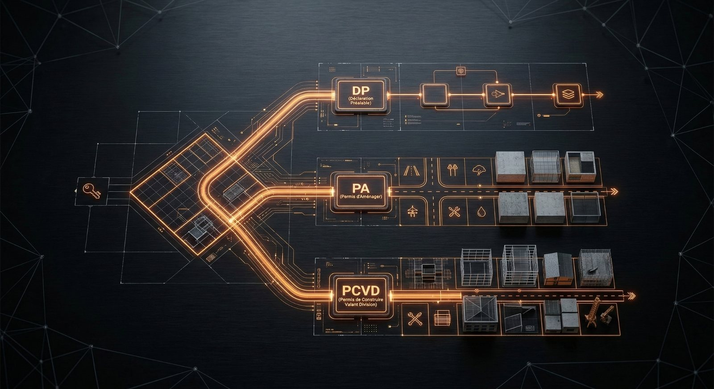
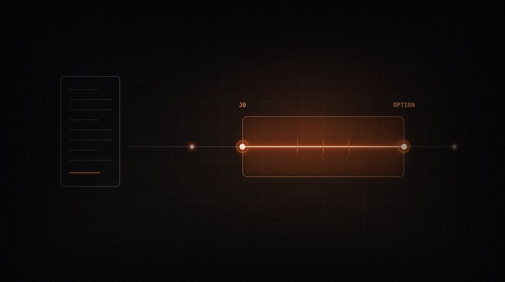

La bibliothèque AOI
Les méthodes,
en partage.
Structurer un projet. Comprendre un montage.
Faire avancer une opération, une lecture à la fois.
en accès libre
Coopérer · Stratégie
Les bons projets
se construisent
à plusieurs.
Pourquoi rejoindre un réseau d’opérateurs immobiliers ? Une lecture pour comprendre la place des rencontres dans vos prochaines opérations.
Lire le guideLes repères pour passer à l’action
À chaque question,
un point de départ.
Montages, urbanisme, travaux, financement…
Explorez les sujets qui font votre quotidien.
 N° 14Nouveau
N° 14NouveauCCMI, contractant général ou entreprise TCE : quel contrat pour quelle opération
CCMI, entreprise TCE ou contractant général : comprendre la répartition des missions, des garanties et des risques avant de signer.
Un notaire de chaque côté : comment travaillent notaire vendeur et notaire acquéreur
Notaire vendeur et notaire acquéreur : organiser leur collaboration, transmettre le bon dossier et anticiper le calendrier de la vente.
 N° 16Nouveau
N° 16NouveauUne opération, deux régimes de TVA : tenir la comptabilité lot par lot
Une opération, plusieurs régimes de TVA : affecter les dépenses à chaque lot, documenter les frais communs et suivre les régularisations.
Plans de principe, plans d'exécution : qui dessine quoi, et à quel moment
Du plan de principe aux plans d’exécution : comprendre les phases, les livrables et les responsabilités de chaque intervenant.
Qui mandate qui : la carte des contrats d'une opération
Architecte, bureaux d’études, entreprises, contrôleur technique : identifier qui signe avec qui et éviter les missions oubliées.
Vendre à un marchand de biens : expliquer le montage à un vendeur particulier
Un guide à partager au vendeur pour expliquer le prix, les délais, les conditions suspensives, la substitution et le paiement à terme.
Sous-traitance : ce que la loi de 1975 impose à l'opérateur
Sous-traitants, agrément et garantie de paiement : les points à organiser avant le chantier et à suivre pendant les travaux.
Étude de sol G1, G2 : quand elle est obligatoire et qui la paie
Étude de sol G1 ou G2 : distinguer les étapes de la vente et de la construction, les responsabilités et les documents à transmettre.
SEP immobilière : qu'est-ce que c'est et pourquoi l'utiliser en 2026 ?
La Société en Participation permet à des opérateurs de s'associer sur une opération sans créer de structure juridique. Souplesse, discrétion, fiscalité transparente.
Paiement à terme : acquérir sans banque ni financement externe
Comment acheter, transformer et revendre un bien immobilier sans crédit bancaire, sans frais financiers et sans mobiliser de trésorerie. Réservé aux professionnels.

N° 03Division parcellaire : les 3 autorisations d'urbanisme à connaître
Déclaration préalable, permis d'aménager ou PCVD ? Quand utiliser chaque autorisation, les délais, et les pièges à éviter.
Marchand de biens : 5 alternatives au crédit bancaire en 2026
SEP, paiement à terme, co-production, crowdfunding, portage foncier — panorama complet des solutions de financement hors circuit bancaire.
Comment structurer une opération immobilière sans apport personnel
Refus bancaire, fonds propres insuffisants, passif bancaire — les principes pour monter une opération rentable malgré ces obstacles.
IA et immobilier opérationnel : pourquoi c'est indispensable en 2026
DVF, PLU, Cadastre, DPE en temps réel — comment l'IA détecte ce que l'opérateur n'a pas vu, avant qu'il s'engage.
SEP, SCCV, SAS, SCI : quelle structure pour votre opération ?
SEP, SCCV, SAS ou SCI : le choix se fait avant la promesse, pas à la revente. Responsabilité, fiscalité, TVA — ce que chaque forme implique réellement.

N° 08Promesse ou compromis : sécuriser l'avant-contrat d'une opération
Enregistrement sous dix jours, indemnité d'immobilisation, clause de substitution, conditions suspensives utiles : sécuriser l'avant-contrat d'une opération.
Purger un permis de construire : les trois horloges à surveiller
Recours des tiers, retrait administratif, contrôle de légalité : trois délais distincts, et une réforme de fin 2025 que beaucoup ignorent encore.
DO, décennale, TRC : qui assure quoi sur une opération
Dommages-ouvrage, décennale, tous risques chantier : qui souscrit quoi, à quel moment, et les cinq points à vérifier sur une attestation.
Répondre à un appel d'offres privé : ce que l'opérateur regarde vraiment
Ce qu'un opérateur regarde vraiment dans une offre, l'anatomie d'une réponse qui passe, et les six erreurs qui éliminent d'emblée.
TVA du marchand de biens : le régime se décide à l'achat
Marge ou prix total : la condition d'identité, le piège du terrain détaché, et la recodification entrée en vigueur au 1er septembre 2026.
Passoires thermiques : l'état de la règle, et ce qu'elle change pour un opérateur
Calendrier en vigueur, réforme du calcul de janvier 2026, projet de loi en cours d'examen : l'état de la règle et sa lecture opérationnelle.
De la lecture à la rencontre
Une méthode s’apprend.
Un réseau se construit.
Partagez votre pratique et rencontrez les professionnels du réseau.